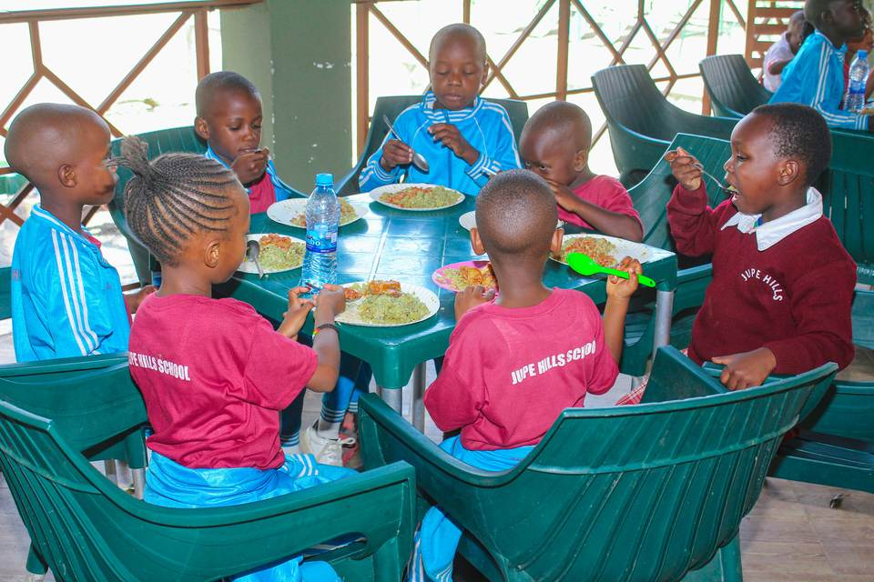

For Jupe Hills families
Practical information in one place
Use this page for school-day guidance, term planning, uniform information and the questions families ask most often.
School policies
Shared expectations
Attendance and punctuality
Children learn best when they arrive on time and attend consistently. Families should contact the school when a child will be absent.
Positive behaviour
Children are expected to treat others respectfully, follow reasonable instructions and care for school property. Staff guide behaviour in age-appropriate ways.
Health and medication
Tell the school about allergies, ongoing health needs or medication. A child who is unwell should rest at home and return when ready for the school day.
Safeguarding and collection
Children should be collected by an authorised adult. Inform the school in advance if normal collection arrangements change.
Family communication
Parents are encouraged to speak with the class teacher or school office early when a question or concern arises.
Plan ahead
Term dates and holidays
| Period | Dates | Notes |
|---|---|---|
| Term 1 | January–April | Exact dates to be confirmed |
| April break | April | School closed |
| Term 2 | May–August | Exact dates to be confirmed |
| August break | August | School closed |
| Term 3 | September–December | Exact dates to be confirmed |
What children wear
School uniform
Everyday uniform
Sky-blue tracksuit with white stripes and a maroon shirt.
Formal uniform
White shirt with a maroon/red check skirt. Contact the school for the full boys’ formal-uniform specification and approved suppliers.
Please label clothing clearly with the child’s name.

Fees
Payment information
Confirm before paying
Current fee amounts, due dates and official payment instructions are available directly from the school. Do not send money to a number that has not been confirmed by the school office.
Working together
Parent–teacher association
The parent–teacher association gives families and school staff a regular place to discuss school life, support activities and strengthen communication. Confirmed meeting dates and contact details will be published here.
Frequently asked
Parent FAQ
What time does school begin?
The published placeholder hours are Monday to Friday, 7:30–15:30, with daycare from 7:00. Confirm arrival time directly with the school.
How do I report an absence?
Call or WhatsApp the school as early as possible and include the child’s name and class.
How can I speak with a teacher?
Contact the school office to arrange an appropriate time that does not interrupt lessons.
Where can I find admission information?
Visit the Admissions page for ages, interview guidance, documents and the inquiry form.
How are urgent announcements shared?
The school uses direct family communication. This website and future newsletter provide an additional reference.